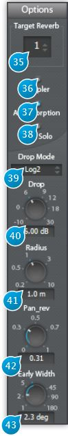

7 Options

7.1 (35) Target Reverb
Drop-down menu indicating the currently selected reverb engine. Clicking this menu allows you to choose between the three available engines, each one having its one independent set of parameters. For example, you could combine two or three reverbs in order to simulate a complex room architecture, made up of different spaces with completely different sizes and materials, or to achieve special effects.
7.2 (36) Doppler
Toggles Doppler effect handling on and off. The Doppler effect is a well-known wave propagation phenomenon where the height of a sound perceived from a listener standpoint rises when the source is accelerating, and falls when decelerating. This is the ambulance or police siren pitch going up then down when passing you by effect you are familiar with.
It will only be heard if you rapidly move the sources locations quite fast, but thanks to the virtual nature of the Spat, you can bypass Physics’ laws and manually inhibit it using this switch, should it be a nuisance for the particular application you’re dealing with.
7.3 (37) Air Absorption
Simulates the frequency-dependent absorption of air, where high frequencies roll-off quicker than low-frequencies with respect to distance. You’ve most probably noticed this other real-world phenomenon when you’re far away from a concert venue and only able to hear the bass, and gradually start to hear the whole mix as you get closer.
7.4 (38) Clear Solo
Clear all solo that have been previously engaged on sources.
7.5 (39) Drop Mode
Owing to a fundamental law of acoustics and geometry, namely energy conservation, sound pressure drops in level as one moves away from the source. Choose “Log2” for an acoustically accurate setting, which corresponds to a “Drop” value attenuation every time the distance from the source is doubled (logarithmic behaviour), or “Linear”, for a less radical drop law.
7.6 (40) Drop
This value determines the value of the level attenuation in dB (deciBels), according to the selected drop mode. Default is 6dB, which is the physically accurate value.
7.7 (41) Radius
Specifies the radius of a disk, in meters, centered around the listener’s head, where the drop attenuation is not taken into account, and the sound level is kept constant with regards to distance. This is not only useful to prevent any dramatic sound level peak when placing a source too close to the listener, it also reflects real-world behaviour quite accurately, where sources do have a certain physical size, unlike point sources that are commonly used to model far-field acoustics.
This “no-drop” zone is displayed as a transparent-blue disk of matching radius on the preview.
7.8 (42) Pan_rev
By default, only early reflections are panned, and the cluster reflections, which form the diffuse part of the early reverberation, are panned dead center. Pan_rev allows you to modify cluster panning, thus imparting some directionality or perceived direction to the diffuse part of the sound.
7.9 (43) Early Width
Controls the width of the sound projection lobe of the early reflections from a source in the virtual acoustic space, in degrees. The minimum setting, 1°, gives a very directional source, whereas 180° makes it omnidirectional.